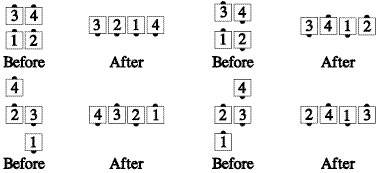

Starting formation: Tandem Couples, Box Circulate, or Tandem Dancers in a Z (e.g. from a wave after the Ends Fold)
Lead dancers do their part of a Peel Off turning away from the center of the formation and walking in an approximate semicircle to become the ends of a four-dancer line or wave. Trailing dancers do their part of a Trail Off stepping forward as necessary and walking in a small semicircle around the center point to become the centers of the forming line or wave. When the trailers are a Couple and must cross paths, the dancer on the right has the right-of-way so the Beau allows the Belle to cross in front (Half Sashay). When the trailers are facing opposite directions they step forward as necessary to the centerline and Trade with each other (using the same hand as the handedness of the formation).
As in Peel Off and Trail Off, always adjust to end in a four-dancer line or wave with each dancer having turned half (180 degrees). Peel and Trail, including all necessary adjustments, is danced as one continuous motion that cannot be fractionalized.
Peel and Trail from Tandem Couples will end in a One-Faced line. Peel and Trail from a Box Circulate or from a Right or Left Hand Z will end in an opposite-handed Wave.
Notes:

Timing: Tandem Couples - 4, Box Circulate or Z - 6